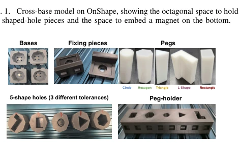
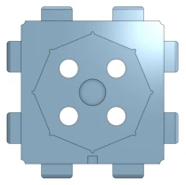
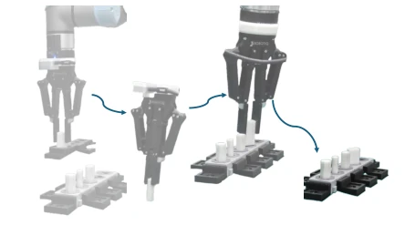
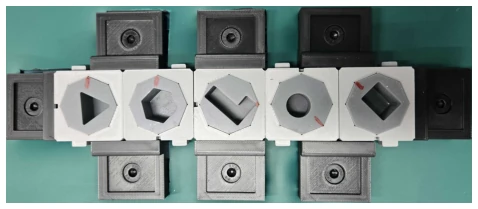

This paper delivers another set of "physical Lego" to the Embodied AI community. The core selling point of Peg-in-Bench is not a new algorithm, but rather transforming the peg-in-hole task into a modular, reconfigurable physical benchmark. The advantages are obvious: 3D printing is inexpensive, components are interchangeable, it can test generalization across space, geometry, and task combinations, much more flexible than those fixed-configuration benchmarks (such as NIST [1]). However, the drawbacks are also painful: as a benchmark paper, it has not yet completed baseline experiments, only mentioning "establishing baseline results" in future work, so now it can only be considered a "semi-finished" evaluation framework. Additionally, although 3D printing precision is nominally 0.05mm, actual tolerance control remains a mystery for high-precision assembly, and it does not account for perception robustness such as lighting and friction, representing an extreme embodiment of the "control variable method". It is suitable for teams wishing to test generalization, but not suitable for those seeking quick success who want to publish results directly at top conferences.
High-precision insertion is a fundamental challenge in robot manipulation [1], [2], but existing benchmarks are mostly constrained by fixed task configurations. For instance, Cranfield [4], DATE [5], and ManipulationNet [11], although standardized, cannot evaluate the transferability of skills across different layouts, poses, or structures. With the rise of learning-based methods [6], [7], evaluating generalization has become crucial. Existing benchmarks primarily focus on the performance of single task instances, lacking systematic support for task-level generalization. Peg-in-Bench aims to fill this gap by achieving controlled variations in geometry, tolerance, and spatial layout through modular components, thereby systematically evaluating the robot's ability to adapt to unseen scenarios while maintaining physical condition reproducibility, rather than merely grinding scores on a single configuration.

Fig. 2. Benchmark pieces printed using 3D printers.
The overall framework consists of three types of core components: Pegs (5 geometric shapes), Shaped-hole pieces (3 tolerance levels), and Bases (4 connection structures). Pegs and Holes are manufactured using resin printers (0.05mm precision) to ensure accurate key dimensions; Bases are produced using standard FDM printing. Components are connected via N50 magnets, ensuring fixation while allowing quick replacement, and can release when subjected to excessive force to prevent damage. The design encompasses three generalization dimensions: spatial generalization (position/pose changes), geometric generalization (shape/tolerance changes), and task combination generalization (multi-stage assembly). Additionally, a Scenario Generator Tool was developed, capable of randomly generating task configurations and outputting machine-readable JSON descriptions, supporting train/val/test set splits, ensuring experimental reproducibility and standardization.

Fig. 1. Cross-base model on OnShape, showing the octagonal space to hold the shaped-hole pieces and the space to embed a magnet on the bottom.

Fig. 3. Demonstration of the single-peg insertion task using the benchmark with a UR7e robot and Robotiq gripper.
The main contribution of this paper lies in the benchmark framework design rather than algorithm comparison. The experiment section focuses on highlighting three typical scenarios: single peg insertion (evaluating shape generalization), tolerance-dependent insertion (evaluating precision adaptation), and modular assembly (evaluating skill combination). The Scenario Generator Tool can generate randomized hole positions and poses, and provide task specifications via JSON. Fig 4 and Fig 5 display the configurations generated by the tool and real environment reproduction, demonstrating the feasibility of physical deployment. It is worth noting that the paper explicitly states "future work will focus on establishing baseline results", therefore specific algorithm performance comparison data is not currently provided. This provides a standardized testbed for subsequent research, but at the current stage cannot be directly used for algorithm performance ranking, serving more as a definition of evaluation protocol and physical environment.

Fig. 5. Same scenario replicated using the benchmark pieces in a real- world environment, ready to use for data collection.